Student Guide: Installing Claude Cowork and Connecting GitHub
This guide shows you how to install Claude Cowork on a Mac, Windows, or Linux computer, use it from a Chromebook, keep its work safely contained, and connect it to GitHub. Cowork is the part of the Claude app that carries out multi-step tasks for you, such as reading a folder of files, writing new ones, and organizing them, instead of only answering questions. Unlike Claude Code, it needs no Terminal commands (except a one-time install on Linux): you install one app, sign in, and type your request. If all goes well, setup takes about 15 minutes.
The screenshots come from real screens checked on November 9, 2026, with personal details removed. Pictures marked Illustration are drawings of screens we couldn't capture (mostly Mac and Linux); the buttons they show match the real ones. If your screen looks a little different, the app has probably been updated: look for the same button names.
Before you start
Cowork only works on a paid Claude plan. For this course, you must use your own Claude Pro account ($20 a month). The free plan does not include Cowork. You also need a free GitHub account (sign up for GitHub) for the GitHub steps.
Cowork now runs your tasks on Anthropic's computers, not yours, so even an older laptop can use it. The Claude Desktop app is still what lets Cowork reach the files in a folder on your computer.
| System | Claude Desktop app | Cowork |
|---|---|---|
| macOS 13 (Ventura) or newer | Yes | Yes, with your local folders |
| Windows 10 or newer | Yes (x64 and ARM) | Yes, with your local folders |
| Linux: Ubuntu 22.04+ or Debian 12+ | Yes (beta) | Yes, with your local folders |
| Chromebook | No | Yes, in the browser at claude.ai, without local folders |
Tip: close and reopen the Claude app after installing or updating it. Most "I can't find Cowork" problems are an out-of-date app.
Install on macOS
- Go to the Claude download page and click Download next to macOS. One version works on both Apple silicon and Intel Macs.
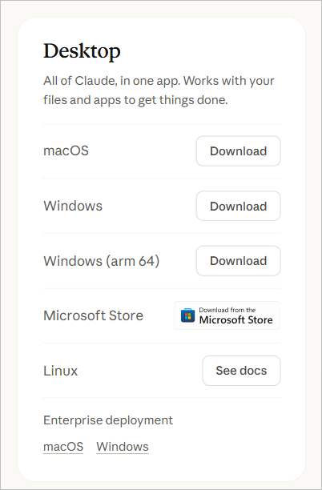
- Open the downloaded
.dmgfile from your Downloads folder. - In the window that opens, drag the Claude icon onto the Applications folder.
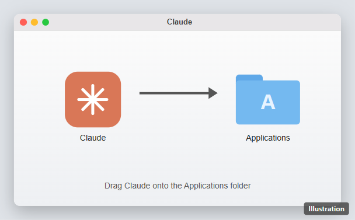
Illustration - Open Applications and double-click Claude. If your Mac asks whether you're sure you want to open an app downloaded from the internet, click Open.
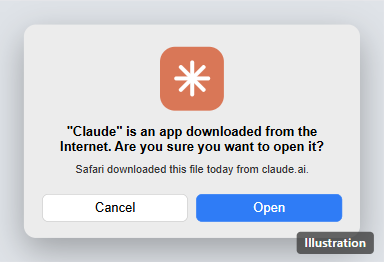
Illustration - Click Get started. Sign in with your Claude Pro account: click Continue with Google, or type your email and click Continue with email. Claude emails you a sign-in link; open it on the same computer, or type the code it shows into the box and click Verify email address.
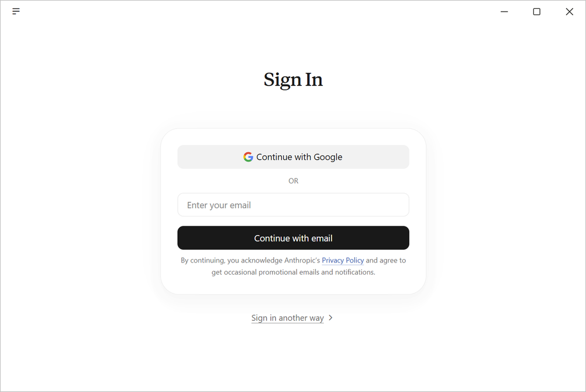
The sign-in screen (shown on Windows; a Mac looks the same).
The app updates itself. If it ever asks to restart for an update, let it.
Install on Windows
- Find out which kind of processor your computer has: press the Start key, type
About your PC, and open it. Next to System type, you'll see either "x64-based processor" (most laptops) or "ARM-based processor" (some newer Surface and Snapdragon laptops).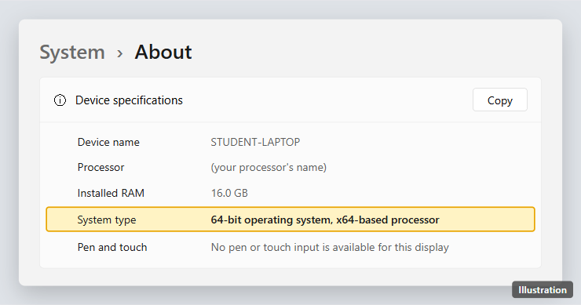
Illustration - Go to the Claude download page and click the button that matches: Download for Windows (x64) or Windows (arm64). You can also install Claude from the Claude page in the Microsoft Store, which picks the right version for you.
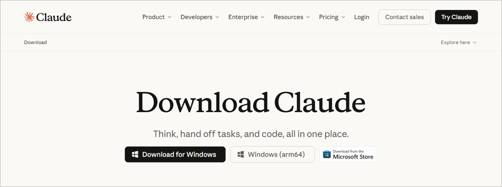
- Open the downloaded setup file and follow the prompts.
- Open Claude from the Start menu.
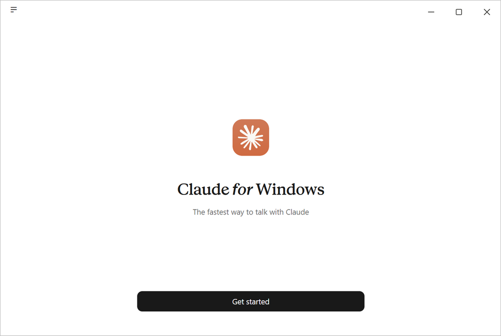
- Click Get started. Sign in with your Claude Pro account: click Continue with Google, or type your email and click Continue with email. Claude emails you a sign-in link; open it on the same computer, or type the code it shows into the box and click Verify email address.
The app updates itself. If it ever asks to restart for an update, let it.
Install on Linux
The Linux app is in beta and runs on Ubuntu 22.04 or newer and Debian 12 or newer. Open a terminal (Ctrl+Alt+T) and run these three commands one at a time. The first one asks for your password; nothing shows on screen as you type.
sudo curl -fsSLo /usr/share/keyrings/claude-desktop-archive-keyring.asc https://downloads.claude.ai/claude-desktop/key.ascecho "deb [signed-by=/usr/share/keyrings/claude-desktop-archive-keyring.asc] https://downloads.claude.ai/claude-desktop/apt/stable stable main" | sudo tee /etc/apt/sources.list.d/claude-desktop.listsudo apt update && sudo apt install claude-desktop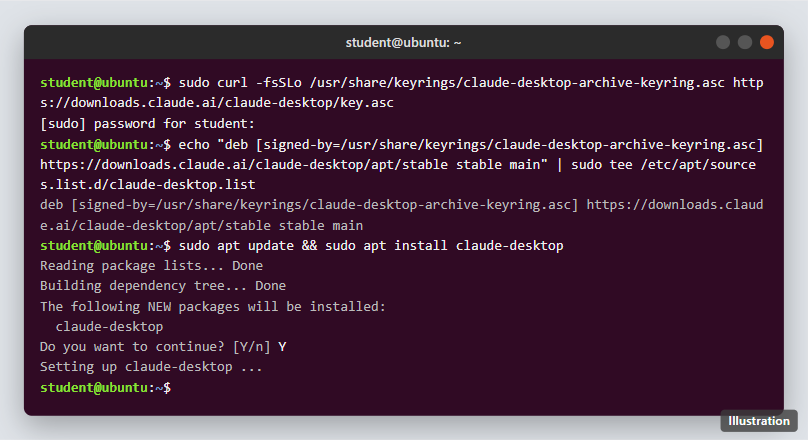
Then open Claude from your applications menu (or type claude-desktop), click Get started, and sign in. On Linux the app doesn't update itself: it updates whenever you run your system's normal updates (sudo apt update && sudo apt upgrade).
Some Linux features are missing: Claude can't control your screen (computer use), and dictation isn't available. Anthropic's install page also lists KVM virtualization, 8 GB of memory, and about 25 GB of free disk space for Cowork on Linux. If Cowork says virtualization isn't available, ask the instructor.
Use Cowork on a Chromebook
There is no Claude app for Chromebooks, but Cowork works in the browser:
- Open Chrome and go to claude.ai. Sign in with your Claude Pro account.
- Under the message box, click Cowork (next to Chat), then describe your task in the box.
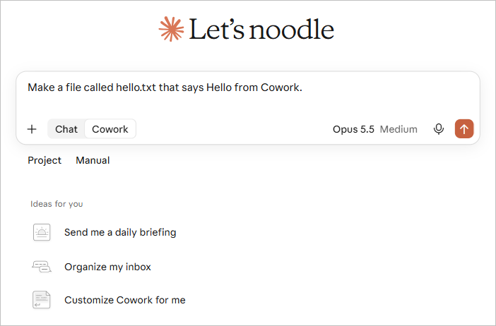
In the browser, Cowork can't open folders on your Chromebook. To give Claude files, click + and choose Upload or add files. When Claude is done, click a file under Outputs to open it, then click Download. Everything else in this guide works the same way, except the GitHub Desktop steps: Chromebook students upload files on github.com instead (see Connect to GitHub).
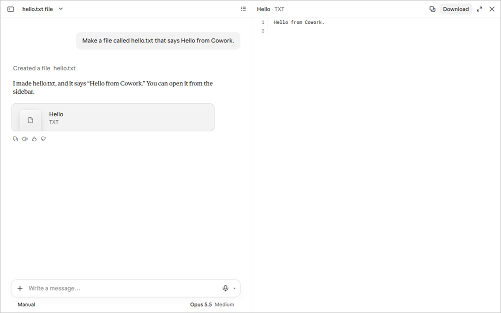
First launch
Before you open Cowork, make one folder for this course and keep all your course files in it. Cowork can only see the folders you connect, so this keeps the rest of your computer out of reach.
| System | Make a course folder |
|---|---|
| macOS | Open Finder, go to Documents, choose File > New Folder, and name it claude-class |
| Windows | Open File Explorer, go to Documents, choose New > Folder, and name it claude-class |
| Linux | Open your Files app, go to Documents, right-click, choose New Folder, and name it claude-class |
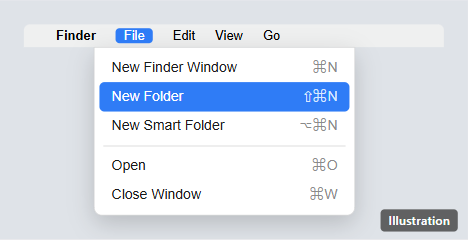
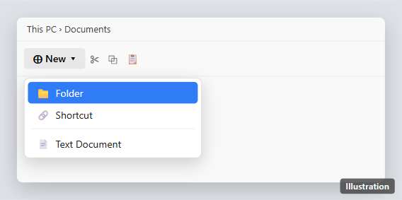
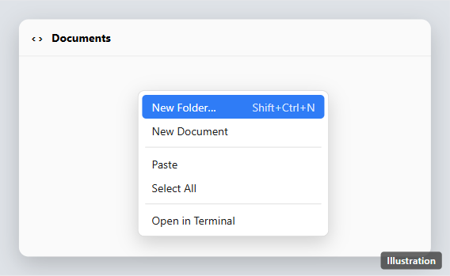
Then:
- Open the Claude app. Under the message box, click Cowork (next to Chat). If you don't see it, update the app and check that you're signed in to your Pro account.
- Connect your course folder: use the folder button near the message box, or choose it when Claude asks which folder to work in. Pick your
claude-classfolder. Never pick your whole home folder, Documents, or Desktop. - Type a small test request, such as:
Make a file called hello.txt that says Hello from Cowork. - The first time, you may see "Setting up Claude's workspace" for a minute. That's normal.
- When Claude says it's done, open your
claude-classfolder and check thathello.txtis there.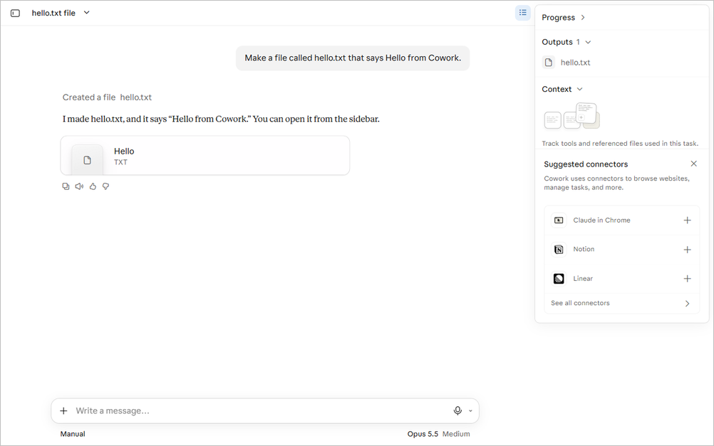
Cowork keeps working while you do other things, but it can only reach your folder while the Claude app is open. Leave the app open until a task is finished.
Sandbox your work
Cowork comes sandboxed: you don't install anything to get it. Each task runs in a temporary, sealed-off workspace on Anthropic's servers that is erased when the session ends. Your job is to keep a few settings tight so Claude only touches what you meant it to.
| Protection | What it does | Who controls it |
|---|---|---|
| Cloud sandbox | Claude's commands run in an isolated, temporary workspace, not on your computer | Always on |
| Folder access | Claude reads and writes only the folders you connect | You, when you connect a folder |
| Delete protection | Claude must ask before permanently deleting any file, in every mode | Always on |
| Approval mode | Decides whether Claude asks before each action | You, in the mode menu under the message box |
| Network limits | Everything leaving the sandbox goes through a filter; only allowed sites are reachable | Your Claude capabilities settings (on Team or Enterprise plans, your administrator) |
Set these up once:
- Approval mode: choose Manually approve while you're learning. Click the mode button under the message box (it shows the current mode, such as Manual or Auto) and pick Manually approve, so Claude asks before it acts. Pro, Max, and Team plans start on Automatically approve. Never choose Skip all approvals.
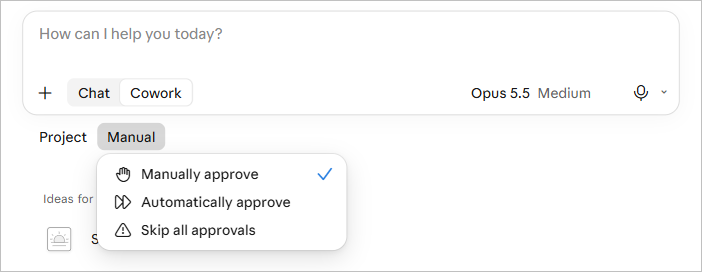
- Folders: connect only
claude-class. If you connected anything bigger by mistake, remove it and connect the course folder instead. - Computer use: leave it off. This beta feature lets Claude click and type on your screen, and it skips the permission checks that protect everything else.
- Deleting: read before you click Allow. When Claude asks to delete a file, check the file name. Click Allow only if you meant it.
- Network: keep internet access narrow. On the capabilities settings page, don't widen Claude's internet access unless the instructor asks you to. A change applies only to conversations you start afterward.
Things to know:
- Connectors and Claude's web search aren't limited by the network setting. Add only the connectors the course needs.
- Deleting a task removes it from your history right away; Anthropic erases it from its systems within 30 days.
- Long, multi-step tasks use more of your plan's usage than a quick question.
Connect to GitHub
Cowork writes files into your claude-class folder; a second app uploads them to GitHub. Anthropic doesn't document a way for Cowork to save to GitHub on its own, so you stay in charge of every upload.
| System | Upload to GitHub with |
|---|---|
| macOS, Windows | GitHub Desktop, a free app (steps below) |
| Linux, Chromebook | The github.com website (steps below) |
macOS and Windows: GitHub Desktop
- Download GitHub Desktop from the GitHub Desktop download page, install it, and open it.
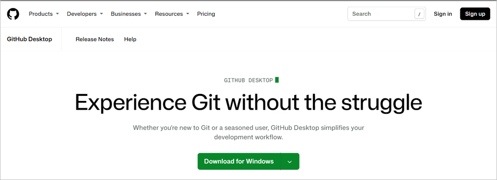
On a Mac, the same button offers the Mac download. - Click Sign in to GitHub.com, log in in the browser window that opens, and click Authorize. Back in GitHub Desktop, accept the suggested name and email.
- Choose File > Add local repository, click Choose…, and pick your
claude-classfolder. GitHub Desktop says the folder isn't a repository yet: click create a repository, then Create repository. - Click Publish repository. Uncheck Keep this code private if you'll publish a website from it (see the practice exercise), then click Publish repository again.
- From now on, after Cowork changes files, open GitHub Desktop. Your changed files appear on the Changes tab. Type a short note in the Summary box at the bottom left, click Commit to main, then click Push origin at the top.
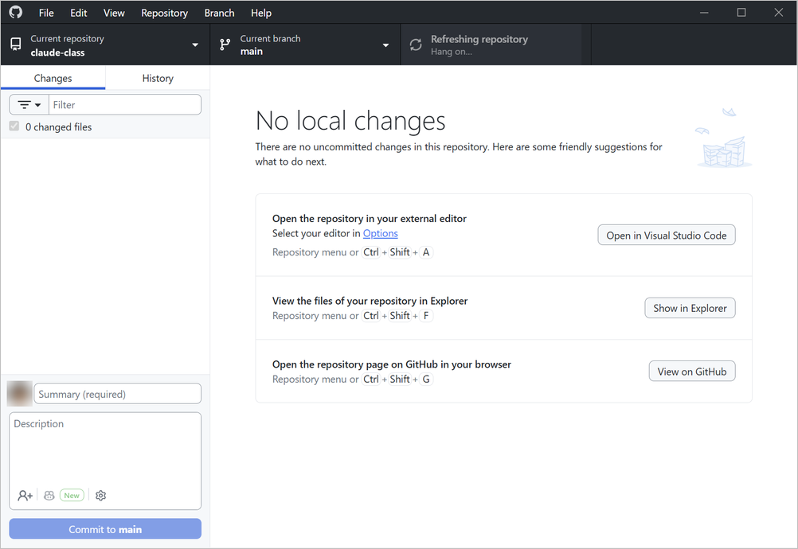
Linux and Chromebook: the github.com website
- Sign in at github.com, click + at the top right, and choose New repository.
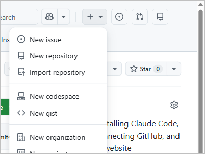
- Type
claude-classunder Repository name. Set Choose visibility to Public, switch Add README to On, and click Create repository.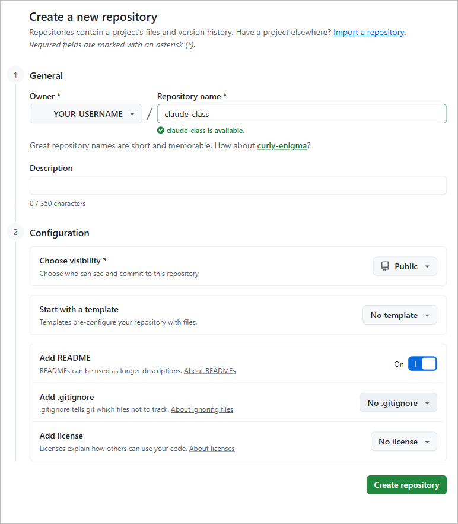
- Click Add file > Upload files, drag in the files Claude made (Chromebook: the files you downloaded from Cowork), and click Commit changes.
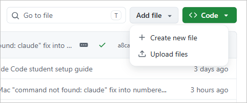
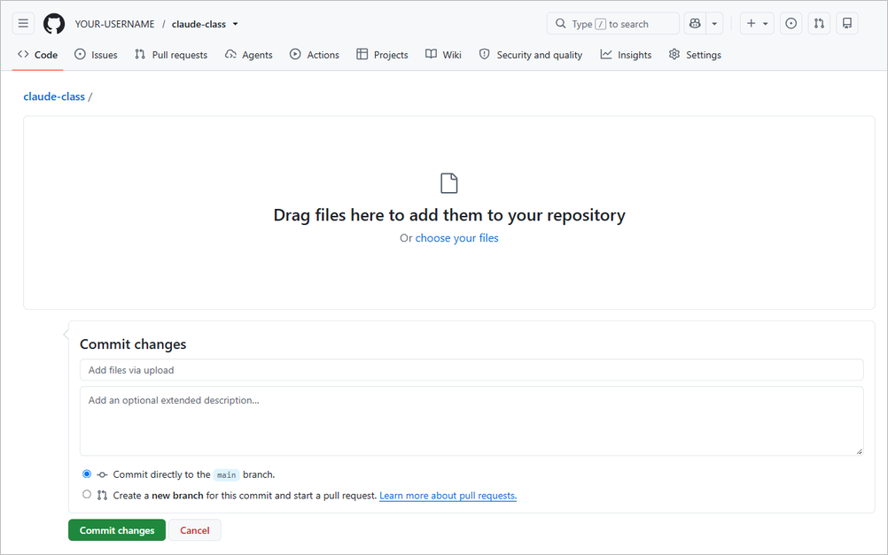
To replace a file later, upload the new version with the same name; GitHub keeps the old version in its history.
Claude can also read a GitHub repository: in a chat, click + and choose Add from GitHub. This copies the files in for Claude to look at, but Claude can't save changes back that way.
Practice exercise: publish a one-page website
This short exercise confirms every piece works: Cowork makes a web page in your course folder, you upload it to GitHub, and GitHub publishes it at a public address. It takes about 15 minutes.
- Open Claude, start a Cowork task, and make sure your
claude-classfolder is connected. Type this request:
In my claude-class folder, make a one-page website in a file called index.html. Put my name at the top, a short paragraph about a book I am reading this semester, and a list of three questions I have about it. Keep it to one file with the styling inside it.- If Claude asks permission before writing the file, read the request and approve it. (It may simply make the file; either is fine.)
- Open your
claude-classfolder and double-clickindex.html. It opens in your browser. Ask Claude for any changes you want. - Upload it to GitHub (see Connect to GitHub): in GitHub Desktop, commit and push; on Linux or a Chromebook, upload
index.htmlon github.com. - On github.com, open your
claude-classrepository and click Settings, then Pages in the left menu. - Under Build and deployment, set Source to Deploy from a branch, choose main and / (root), and click Save.
- Wait one or two minutes, then refresh the Pages screen. It shows your site's address,
https://YOUR-USERNAME.github.io/claude-class/. Open it.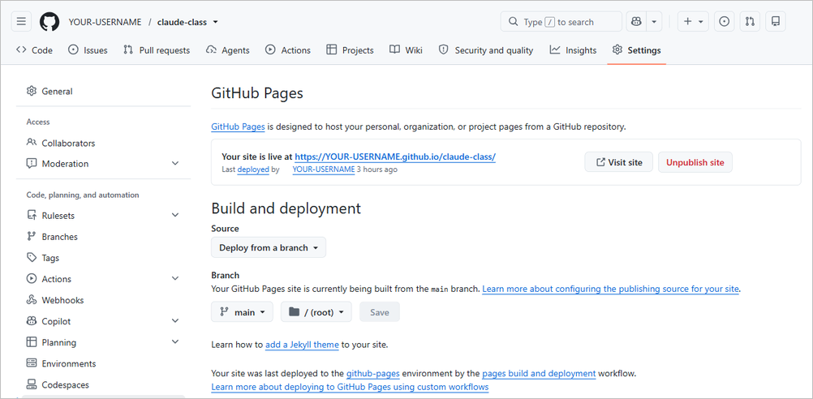
When you are done, check off:
- Claude Desktop is installed and signed in (Chromebook: claude.ai works)
- Cowork made
index.htmlin yourclaude-classfolder - Approval mode is Manually approve and only
claude-classis connected - The file is in your GitHub repository
- Your site opens at its github.io address
- You sent the instructor the link
Troubleshooting
| You see | Likely cause | Fix |
|---|---|---|
| No Cowork option under the message box | The app is out of date, or you're signed in to a free account | Update the app and restart it; check that you're signed in to your Claude Pro account |
| "Setting up Claude's workspace" | First run | Wait a minute; this is normal |
| Claude stopped partway through a task | The Claude app was closed, so Cowork lost your folder | Reopen the app and leave it open until the task is done |
| Files aren't where you expected | The wrong folder was connected | Check which folder is connected and where Claude says it saved the file |
| Claude can't open a file you need | The file is outside claude-class | Copy it into claude-class; don't connect a bigger folder |
| Linux: "virtualization isn't available" | KVM is turned off on this computer | Ask the instructor; you can use Cowork at claude.ai in the browser meanwhile |
| GitHub Desktop shows no changes | Wrong folder added, or Cowork hasn't saved yet | Check that GitHub Desktop's Current repository is claude-class |
| The github.io address shows "404" | Pages isn't on yet, or index.html isn't in the top level of the repository | Wait two minutes and refresh; check the Pages settings in step 7 of the exercise |
| You hit your usage limit | Long tasks use more of your plan | Wait for the limit to reset, or break the task into smaller steps |
Sources
All Anthropic pages checked November 9, 2026.
- Getting started with Cowork (plans)
- Installing Claude Desktop (system requirements, Linux install commands and limits)
- Use Cowork on web, desktop, and mobile (cloud sessions, local folder access)
- Using Cowork safely (sandbox, delete protection, approval modes, network)
- Cowork architecture overview (sandbox and network proxy)
- Use connectors and Use the GitHub integration (GitHub is read-only in Claude)
- Claude downloads
- GitHub Desktop and GitHub Pages documentation (github.com screens and GitHub Desktop's main window checked November 9, 2026; GitHub Desktop's sign-in, Add local repository, and Publish screens not re-checked)